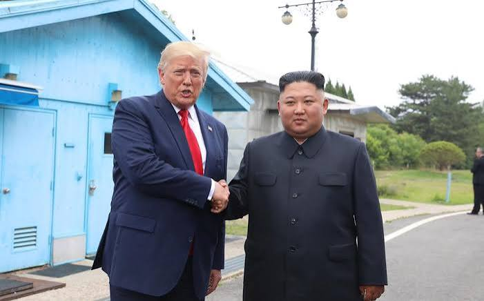

Breaking News
 August 18
August 18
byNoah Grayson
Donald Trump says North Korean leader Kim Jong Un responded positively to his outreach after Washington announced plans to reduce US-South Korea military exercises
Washington announced to scale back joint military exercises with South Korea. US President Donald Trump said North Korean leader Kim Jong Un was “very positive” in response to his recent diplomatic overture. The announcement has revived questions over whether Trump’s style of personal diplomacy with Pyongyang could lead to new negotiations over North Korea’s nuclear program. Kim had responded to Trump’s overtures, but did not reveal what was said in the North Korean leader’s message, Trump said. Trump said he was cutting back on the US-South Korean military drills because of his relationship with Kim, and because big exercises were costly and could be perceived as provocative. The decision has left Seoul uncertain, with officials and analysts debating whether the reduction in military exercises might help restart diplomacy or undermine deterrence against North Korea. South Korea’s government has said it hopes the move could open the door to dialog, while security experts have cautioned that reducing exercises may affect military readiness at a time when Pyongyang has expanded weapons capabilities and deepened ties with Russia and China. It signifies another major shift in Trump’s North Korea policy, going back to the direct leader-to-leader engagement that characterized his first-term diplomacy with Kim.
Trump’s decision to reduce US-South Korea military drills marks a major change in Washington’s stance on the Korean Peninsula. The president said the exercises were costly and sent a wrong signal to North Korea, which he said was less menacing when he was president. Trump also pointed to his personal relationship with Kim Jong Un as a reason for a less confrontational approach. The annual Ulchi Freedom Shield exercises involve thousands of US and South Korean troops and are designed to improve coordination and prepare allied forces for any potential North Korean aggression. South Korea’s military said the drills will continue as scheduled despite Trump’s announcement. Trump’s comments come after he halted major military exercises in 2018 after his first summit with Kim in Singapore. At the time, Trump said a pause in drills could open room for negotiations, though later talks failed to yield a major agreement on denuclearization. The latest move comes as North Korea has a significant nuclear weapons program and missile capability. Analysts have speculated about whether Pyongyang might make any significant concessions for a reduction in military pressure from Washington and Seoul. Trump’s approach, it seems, is to reestablish direct lines of communication with Kim. Over and over he has argued that personal relationships between leaders can ease tensions and pave the way for agreements. But critics say that offering concessions before North Korea takes any real steps could weaken the US-South Korea alliance and give Pyongyang diplomatic gains without changing its security posture. Kim’s reaction will now be examined closely for signs of whether North Korea is ready to re-engage in negotiations, or whether the overture remains restricted to diplomatic messaging.
South Korea’s officials are caught in a dilemma, weighing diplomatic opportunities against security concerns as they face ambiguity over the US decision to scale back military exercises. South Korean President Lee Jae Myung’s administration has greeted the prospect of renewed engagement with North Korea, and has voiced support for diplomatic efforts. Seoul has called in the past for dialog to reduce tensions on the peninsula. Some South Korean opposition figures and security analysts, however, have slammed the move, saying any reduction in military exercises could weaken deterrence against Pyongyang. The exercises have several objectives, in addition to combat preparation. They enable U.S. and South Korean forces to train for coordination, improve their communication systems and stay prepared for potential crises. Some 28,500 US troops are based in South Korea under a long-term security commitment to Seoul. Reductions are criticized because military readiness is seen as especially important with North Korea continuing to develop advanced missile systems and building greater security ties with Russia. Those who support Trump’s approach say military pressure alone has not persuaded Pyongyang to give up its nuclear program and that diplomacy is still necessary. The debate raises a larger question for U.S. policy in Asia: Can diplomacy and deterrence be pursued simultaneously? South Korea now has a dilemma of maintaining alliance confidence while promoting efforts to ease tensions with North Korea. The Seoul government has said it wants both stronger diplomacy and continued security cooperation with Washington, but the latest US decision has raised questions about how those two can be balanced.
Trump’s assertion that Kim Jong Un responded positively to the offer has revived speculation about the possibility of future negotiations between Washington and Pyongyang. Trump made history as the first sitting US president to meet a North Korean leader when he held summits with Kim in Singapore and Vietnam during his first term in office. The meetings produced historic images but failed to produce a comprehensive agreement on nuclear disarmament. North Korea has continued to increase its military capabilities and build relations with Russia and China. Today’s diplomatic environment is therefore different from that which existed during Trump’s first term. Analysts warn Kim may see renewed negotiations as a chance to gain international legitimacy and economic benefits without giving up his nuclear weapons program. North Korea has always said it needs security guaranties, an end to sanctions and recognition as a nuclear power before it makes big concessions. The United States has continued to demand the denuclearization of the country, leading to a fundamental dispute between the two sides. Trump’s outreach indicates Washington may be trying to re-open lines of communication ahead of confronting tougher issues. Much will depend on whether Kim sends a concrete signal beyond diplomatic murmurings on where to go next. A formal meeting between Trump and Kim would be a major diplomatic development, but any deal would likely hinge on difficult questions about sanctions, weapons programs and regional security. For now, the reported response from Pyongyang is an opening, not yet a breakthrough. Whether this renewed contact will lead to substantive negotiations or will simply be another brief phase of engagement between Washington and Pyongyang will be seen in the next few weeks.
The latest developments are a major test for Mr Trump’s North Korea policy and for the future of US security policy in East Asia. The reduction of military exercises in an effort to engage directly with Kim Jong Un is part of Trump’s belief that personal diplomacy can ease tensions more than pressure campaigns. Supporters say hostile military postures can complicate negotiations, and that diplomatic openings require confidence building measures. Critics say North Korea has a history of using negotiations to win concessions while continuing to develop weapons. The challenge for Washington is to find a balance between diplomatic flexibility and maintaining credible deterrence. The US-South Korea alliance has been the foundation of regional security for decades. Any changes to military cooperation therefore have implications beyond North Korea, including the relationship with Japan and broader Indo-Pacific strategy. Timing also matters because tensions are already high around the world, including the disputes involving Iran and other international conflicts. Some of Trump’s criticism of South Korea’s position on Iran has been tied to broader concerns about US alliances and security guaranties. South Korea’s priority is still to avoid conflict but to make sure North Korea does not get any strategic benefits. North Korea could gain economic and diplomatic benefits if it re-engages with Washington. For Trump the question is whether personal diplomacy can accomplish what previous talks have not. Kim Jong Un’s reported reaction has opened a door, but hard questions about North Korea’s nuclear program, and sanctions and regional security remain. Whether this renewed line of communication leads to meaningful dialog or is just another brief diplomatic episode will determine the future of U.S.-North Korea relations.

Noah Grayson is a U.S. daily news reporter covering national stories, breaking events, and human-interest developments.